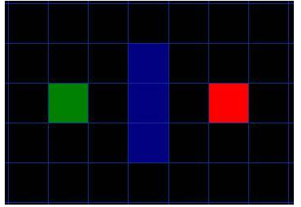
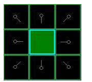
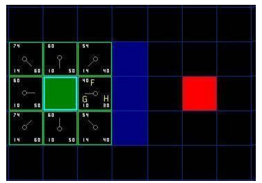
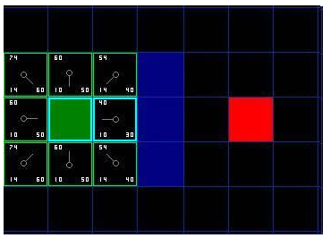
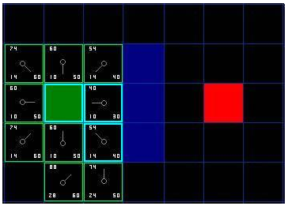
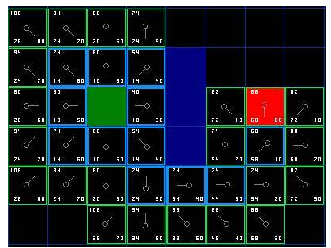
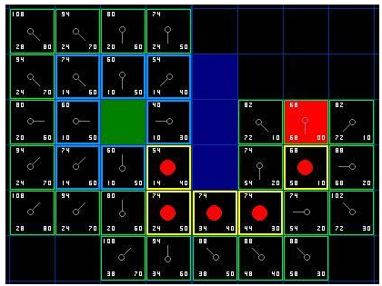

Em 1968, o pesquisador Nils Nilsson estava tentando melhorar o planejamento do caminho feito por Shakey the Robot, um robô protótipo que poderia navegar por uma sala contendo obstáculos. Este algoritmo de localização, que Nilsson chamou A1, era uma versão mais rápida do método então mais conhecido, o algoritmo de Dijkstra, para encontrar caminhos mais curtos nos grafos.
A * é um algoritmo de busca informada, ou best-first search, o que significa que ele resolve problemas procurando entre todos os caminhos possíveis para a solução (objetivo) para aquele que incorre o menor custo (menor distância percorrida, menor tempo ), E entre esses caminhos considera primeiro os que parecem conduzir mais rapidamente à solução. Ele é formulado em termos de gráficos ponderados: a partir de um nó específico de um gráfico, ele constrói uma árvore de caminhos a partir desse nó, expandindo caminhos um passo de cada vez, até que um de seus caminhos termina no nó objetivo predeterminado.
Em cada iteração de seu loop principal, A * precisa determinar qual de seus caminhos parciais para se expandir em um ou mais caminhos mais longos. Ele faz isso com base em uma estimativa do custo (peso total) ainda para ir para o nó objetivo. Especificamente, A * seleciona o caminho que minimiza f(n) = g(n) + h(n).
Onde n é o último nó no caminho, g (n) é o custo do caminho do nó de partida para n, e h (n) é uma heurística que estima o custo do caminho mais barato de n para a meta. A heurística é específica do problema. Para que o algoritmo encontre o caminho mais curto, a função heurística deve ser admissível, o que significa que nunca superestimará o custo real para chegar ao nó de meta mais próximo.
1 2 3 4 5 6 7 8 9 10 11 12 13 14 15 16 17 18 19 20 21 22 23 24 25 26 27 28 29 30 31 32 33 34 35 36 37 38 39 40 41 42 43 44 45 46 47 48 49 50 51 | function A*(start, goal) // The set of nodes already evaluated. closedSet := {} // The set of currently discovered nodes that are not evaluated yet. // Initially, only the start node is known. openSet := {start} // For each node, which node it can most efficiently be reached from. // If a node can be reached from many nodes, cameFrom will eventually contain the // most efficient previous step. cameFrom := the empty map // For each node, the cost of getting from the start node to that node. gScore := map with default value of Infinity // The cost of going from start to start is zero. gScore[start] := 0 // For each node, the total cost of getting from the start node to the goal // by passing by that node. That value is partly known, partly heuristic. fScore := map with default value of Infinity // For the first node, that value is completely heuristic. fScore[start] := heuristic_cost_estimate(start, goal) while openSet is not empty current := the node in openSet having the lowest fScore[] value if current = goal return reconstruct_path(cameFrom, current) openSet.Remove(current) closedSet.Add(current) for each neighbor of current if neighbor in closedSet continue // Ignore the neighbor which is already evaluated. // The distance from start to a neighbor tentative_gScore := gScore[current] + dist_between(current, neighbor) if neighbor not in openSet // Discover a new node openSet.Add(neighbor) else if tentative_gScore >= gScore[neighbor] continue // This is not a better path. // This path is the best until now. Record it! cameFrom[neighbor] := current gScore[neighbor] := tentative_gScore fScore[neighbor] := gScore[neighbor] + heuristic_cost_estimate(neighbor, goal) return failure function reconstruct_path(cameFrom, current) total_path := [current] while current in cameFrom.Keys: current := cameFrom[current] total_path.append(current) return total_path |
Assumindo que nós temos alguém que quer ir do ponto A ao ponto B e que uma parede separa os dois pontos, onde o ponto de partida A é verde, o ponto B de destino é vermelho, e os quadrados pintados azuis são a parede entre eles.
Simplificando a área de procura numa área quadrada é o primeiro passo em pathfinding. Este método particular reduz nossa área de procura a uma ordem simples bi-dimensional. Cada item na ordem representa um dos quadrados na grade e seu estado é registrado como passável ou não passável. O caminho é achado encontrando quais quadrados nós deveríamos tomar para ir de A até B. Uma vez que o caminho é achado, nossa entidade move do centro de um quadrado ao centro do próximo e assim sucessivamente até que o objetivo é alcançado.
Nos quadrados existem pontos presentes no seu centro, eles são chamados de nós. Os nós poderiam ser colocados em qualquer lugar dentro das formas, no centro ou ao longo das extremidades, ou em qualquer outro lugar. Porém, esse este sistema é adotado porque é o mais simples.
Uma vez que nós simplificamos nossa área de procura em um número manejável de nós, o próximo passo é administrar uma procura para achar o caminho mais curto. Isto é feito começando do ponto A, conferindo os quadrados adjacentes, e geralmente, procurando para fora até seja encontrado o destino.
Começa-se a procura fazendo o seguinte:
Na figura a seguir, o quadrado verde escuro no centro é seu quadrado pai. É esboçado em azul para indicar que o quadrado foi acrescentado à lista fechada. Todos os quadrados adjacentes estão agora na lista aberta de quadrados a serem conferidos, e eles são esboçados em verde. Cada um dos quadrados tem um ponteiro cinza que aponta para trás, a seu anterior, que é o quadrado pai.
A chave para determinar quais quadrados usar quando estiver procurando o caminho é a seguinte equação: f(n) = g(n) + h(n), já descrita acima.
O caminho é gerado passando repetidamente por nossa lista aberta e escolhendo o quadrado com a mais baixa contagem de F.
Como descrito acima, G é o custo do movimento para mover do ponto de partida para o quadrado determinado usando o caminho gerado para chegar lá. Neste exemplo, será determinado um custo de 10 a cada quadrado horizontal ou vertical movido, e um custo de 14 para um movimento diagonal. Estes números serão usados porque a distância real para mover diagonalmente é a raiz quadrada de 2, ou aproximadamente 1.414 vezes o custo de mover horizontalmente ou verticalmente. Então se usa 10 e 14 por causa da simplicidade. A relação é quase correta e se evita ter que calcular raízes quadradas e decimais. Isto porque usando números inteiros, como estes, a execução do algoritmo torna-se muito mais rápida para o computador. Já que o pathfinding pode ser muito lento se não forem usados atalhos como estes.
Uma vez que o custo de G está sendo calculado ao longo de um caminho específico para um determinado quadrado, o modo para entender o custo de G daquele quadrado é tomar o custo de G de seu pai e então somar 10 ou 14 dependendo se é diagonal ou ortogonal (não-diagonal) daquele quadrado pai.
H pode ser calculado de uma variedade de maneiras. O método utilizado é chamado o método de Manhattan onde você calcula o número total de quadrados movidos horizontalmente e verticalmente para alcançar o quadrado alvo a partir do quadrado atual, ignorando movimento diagonal, e ignorando qualquer obstáculo que pode estar no caminho.
F é calculado somando G e H. Os resultados do primeiro passo em nossa procura podem ser vistos na ilustração abaixo. São escritos para o F, G, e contagens de H em cada quadrado. Como é indicado no quadrado imediatamente a direita quadrado inicial, F é impresso em cima na parte esquerda, G é impresso em baixo a esquerda, e H é impresso em baixo a direita.
Para continuar a procura, nós escolhemos simplesmente o quadrado que contém o mais baixo F de todos esses que estão na lista aberta. Nós fazemos então o seguinte com o quadrado selecionado:
Dos 9 quadrados iniciais, tem-se 8 quadrados na lista aberta depois que o quadrado inicial foi posto na lista fechada. Destes quadrados, o quadrado com o mais baixo custo de F é o quadrado imediatamente a direita do quadrado inicial, com uma contagem F = 40. Assim, este quadrado é selecionado como nosso próximo quadrado. Está destacado em azul na ilustração seguinte.
Primeiro, remove-se da lista aberta e acrescenta-se nossa lista fechada o nó selecionado para compor o caminho. Então, confere-se os quadrados adjacentes, os quadrados imediatamente a direita deste quadrado são paredes, assim podem ser ignorados. O quadrado imediatamente a esquerda é o quadrado inicial e está na lista fechada, então também é ignorado.
Os outros quatro quadrados já estão na lista aberta, precisa-se conferir se os caminhos para esses quadrados são melhores usando este quadrado para chegar lá, utilizando as contagens de G como nosso ponto de referência.
Quando se repete este processo para todos os 4 quadrados adjacentes da lista aberta, é possível que nenhum dos caminhos são melhores passando pelo quadrado atual, assim nada é alterado. Então, uma vez que não há mais quadrados adjacentes, passa-se para o próximo.
Assim segue-se pela lista de quadrados na lista aberta que está agora com 7 quadrados e escolhe-se um com o mais baixo custo de F. De forma interessante, neste caso, há dois quadrados com uma contagem de 54. Realmente não importa qual dos dois será escolhido. Com a finalidade de velocidade, pode ser mais rápido escolher o último que foi acrescentado à lista aberta. Isto influencia a procura a favor de quadrados que são achados mais tarde na procura, quando se chega mais perto do objetivo.
Foi escolhido o quadrado à direita do quadrado inicial, como é mostrado na ilustração seguinte:
Desta vez, quando se verifica os quadrados adjacentes é possível perceber que o quadrado imediatamente a direita é um quadrado de parede, assim ele é ignorado o ignoramos. O mesmo acontece para o quadrado que está acima.
Isso limita a apenas cinco quadrados restantes. Os outros dois quadrados debaixo do quadrado atual ainda não estão na lista aberta, assim ele são adicionados e o quadrado atual se torna o pai deles. Dos outros três quadrados, dois estão já na lista fechada (o quadrado inicial, e o anterior ao quadrado atual, ambos realçados por dentro em azul no diagrama), assim eles são ignorados. E o último quadrado, imediatamente a esquerda do quadrado atual, é conferido para ver se a contagem de G for mais baixa ao passar pelo quadrado atual para chegar lá. Assim encerra-se e está pronto para a inspeção do próximo quadrado da lista aberta.
O processo é repetido até que seja acrescentado o quadrado alvo à lista fechada, tal como se parece a ilustração abaixo.
Note que o quadrado pai para os dois quadrados abaixo do quadrado inicial mudou da ilustração prévia. Antes ele tinha uma contagem G = 28 e apontou para o quadrado acima e a direita dele. Agora tem uma contagem de 20 e aponta ao quadrado logo acima dele. Isto aconteceu em algum lugar no caminho da nossa procura onde a contagem de G foi conferida e se mostrou ser mais baixa usando um caminho novo. Assim, o pai foi trocado e as contagens de G e F foram recalculadas. Enquanto esta mudança pode não parecer muito importante neste exemplo, existem muitas situações possíveis onde esta verificação constante fará toda a diferença determinando o melhor caminho a seu objetivo.
O caminho pode ser determinado então da seguinte maneira: comece do quadrado designado em vermelho, e trabalhe, movendo para trás de um quadrado à seu pai, seguindo as setas. Isto o levará de volta eventualmente ao quadrado inicial, e isto é seu caminho. Deveria se parecer com a ilustração seguinte. Movendo do quadrado inicial A ao quadrado de destino B é simplesmente uma questão de mover do centro de cada quadrado (o nó) para o centro do próximo quadrado no caminho, até que você alcança o objetivo.
